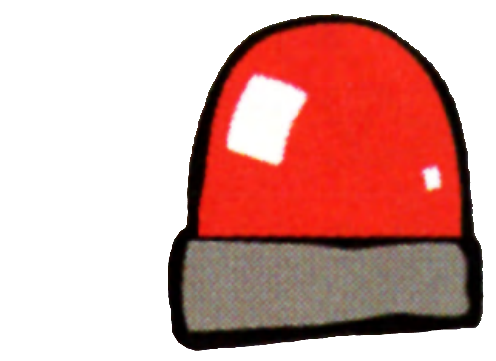

Masaya Matsuura (松浦 雅也) is a Japanese musician, composer, and game designer born June 16, 1961 in Osaka. Before he ever touched a game console, he had already spent more than a decade as one half of the synth-pop duo PSY-S, releasing ten studio albums for Sony Music between 1985 and 1996 and helping pioneer the use of the Fairlight CMI sampler in Japanese pop. When he stepped away from the band in 1996 to found NanaOn-Sha, he carried that obsessive love of sampling and rhythm directly into his next project — a tiny rapping dog named PaRappa — and almost single-handedly defined the modern music game. 松浦雅也は1961年6月16日、大阪生まれの日本のミュージシャン、作曲家、ゲームデザイナーです。ゲーム機に触れるよりずっと前から、シンセポップ・デュオPSY・S（サイズ）の片割れとして、1985年から1996年までソニー・ミュージックから10枚のスタジオアルバムを発表し、フェアライトCMIサンプラーを日本のポップスに導入したパイオニアの一人として活動していました。1996年にPSY・Sを離れて七音社（NanaOn-Sha）を設立した彼は、そのサンプリングとリズムへの執着をそのまま次の作品——ラップする小さな犬「パラッパ」——へと持ち込み、ほぼ独力で現代の音楽ゲームというジャンルを定義しました。
Matsuura graduated from Ritsumeikan University with a degree in Industrial Society in 1983 and almost immediately formed PSY-S with vocalist Chaka (Mami Yasunori). Through the late 1980s and early 1990s the duo produced anime themes, commercial jingles, and pop hits while Matsuura quietly grew fascinated with multimedia. In 1993 he became the first Japanese musician to release a commercial Macintosh CD-ROM, The Seven Colors: Legend of PSY•S City, which won Japan's Multimedia Grand Prix and convinced him that interactive software, not music videos, was the medium that could finally let his songs play back the way he heard them in his head. 1983年に立命館大学産業社会学部を卒業した松浦は、ほぼ間を置かずにヴォーカリストCHAKA（安蘭真美）とPSY・Sを結成します。1980年代後半から1990年代前半にかけて、デュオはアニメ主題歌、CMジングル、ポップヒットを次々と生み出していきました。同時に松浦はマルチメディアへの興味を深め、1993年には日本のミュージシャンとして初めて市販Macintosh CD-ROM作品『The Seven Colors: Legend of PSY・S City』を発表。同作はマルチメディアグランプリを受賞し、彼自身に「音楽ビデオではなくインタラクティブソフトウェアこそが、頭の中で鳴っている音楽をそのまま再生できる媒体だ」と確信させる体験となりました。


Development began in 1994, before the original PlayStation had even reached store shelves. Matsuura had attended Sony's first licensee briefing and walked out convinced the new console was an undertaking that would reshape gaming. A Sony producer introduced him to the New York pop artist Rodney Alan Greenblat, and the two prototyped a rap-based game using paper cut-outs of Rodney's existing characters — the seed of PaRappa's signature flat 2D-on-3D look. Matsuura served as producer, designer, and lead composer, co-writing the soundtrack with Yoshihisa Suzuki. He refused to build the score on the era's standard MIDI synth rigs, leaning entirely on hardware samplers instead because he wanted human voices — not synthesised tones — at the centre of every cue. The Japanese lyrics he drafted alone; the English versions came later, in New York, where rapper Ryu Watabe improvised translations off the cuff in the booth. PaRappa the Rapper launched in Japan on December 6, 1996 and quietly built into a cultural phenomenon over the following year — a delayed success Matsuura credits to Sony's relentless promotion department. He still describes the game as the story of "a once-in-a-lifetime, important youthful period of a sensitive boy." 開発は1994年、初代PlayStationが発売される以前に始まりました。松浦はソニーの最初のライセンシー説明会に出席し、「この新型機はゲームのあり方を作り変える壮大な事業になる」と確信して帰路につきます。やがてソニーのプロデューサーから紹介されたのが、ニューヨークを拠点とするポップ・アーティストロドニー・アラン・グリーンブラットでした。二人は当初、ロドニーが手がけていた既存キャラクターのペーパー・カットアウトを使ってラップゲームのモックアップを作成。これがパラッパ独特の「3D空間に貼り付いた2Dキャラ」というルックの原型になります。松浦は本作でプロデューサー、デザイナー、メインコンポーザーを兼任し、サウンドトラックを鈴木慶尚と共作。当時主流だったMIDIシンセではなく、すべてサンプラーで録音することを徹底しました。歌詞はまず日本語ですべて書き起こし、その後ニューヨークまで飛んでラッパーワタベリュウにフリースタイルで英訳してもらうという贅沢な手順を踏んでいます。1996年12月6日に日本で発売された『パラッパラッパー』は、発売直後ではなく約1年かけて少しずつ大きな現象へと育っていきました。松浦自身は、この遅咲きの成功をソニー宣伝部の粘り強いキャンペーンのおかげだと語っており、いまもこの作品を「感受性の強い少年が一度しか味わえない、特別な青春期の物語」として語り続けています。

By the time PaRappa shipped, Matsuura felt creatively gutted: "empty and in a daze for a long time." He could not imagine continuing the rapping dog's story so soon, and even though Greenblat lobbied for a direct sequel, Matsuura's stated philosophy was to "turn everything upside down and do it backwards." The result was Um Jammer Lammy, a guitar-driven spin-off centred on the painfully shy left-handed lamb Lammy and her band MilkCan. Matsuura composed and produced the bulk of the soundtrack with returning collaborator Yoshihisa Suzuki and newcomer Shigeyoshi Kawagoe, deliberately writing more difficult charts as a direct response to PaRappa fans who had complained the first game was too forgiving. Greenblat later said the rise of consumer email had transformed the workflow — instead of faxing pencil sketches across the Pacific the two could now trade ideas in real time. Released on PS1 in 1999, the game won the inaugural Interactive Achievement Award for "Outstanding Achievement in Original Music Composition" and is the closest thing to a Matsuura solo album in playable form. 『パラッパラッパー』を世に送り出した直後、松浦は創作的に燃え尽きてしまい、「長い間、空っぽで呆然としていた」と振り返っています。ラッパー犬の物語をすぐに続ける気にはなれず、グリーンブラットからは正統な続編を望む声が寄せられたものの、松浦の信条は「すべてをひっくり返して、逆向きに作る」というもの。そうして生まれたのが、極度の人見知りでギターを弾く左利きの羊ラミーと彼女のバンドミルクカンを主役に据えたスピンオフ『ウンジャマ・ラミー』でした。サウンドトラックの大半は松浦と前作の盟友・鈴木慶尚、そして新たに加わった河越重義の三名で作曲・プロデュース。前作を「簡単すぎる」と言ったプレイヤーへの返答として、譜面の難易度を意図的に上げています。グリーンブラットは後年「個人向けEメールが普及したことで、ファックスで鉛筆のスケッチを太平洋越しにやり取りしていた頃と比べ、ワークフローが一変した」と語っています。1999年にPS1で発売された本作は、第1回Interactive Achievement Awardsで「Outstanding Achievement in Original Music Composition（最優秀オリジナル音楽作曲賞）」を受賞しており、いまなおプレイ可能な「松浦ソロアルバム」にもっとも近い作品と評されています。
Sandwiched between the two PaRappa games came one of Matsuura's strangest works: Vib-Ribbon (1999). Built entirely from wireframe vector graphics and small enough to run from PlayStation RAM after the disc was ejected, Vib-Ribbon let players insert their own audio CDs and generated a unique level from each track. Matsuura kept the design deliberately abstract — no story, no characters, no setting — because he was wary of any narrative element accidentally colliding with the personal memories players already attach to their own music collections. The Museum of Modern Art in New York acquired Vib-Ribbon in 2012, and Matsuura has credited the experiment with quietly putting his creative wiring back together — enough, eventually, to imagine a PaRappa sequel again. Without that detour, PaRappa the Rapper 2 would never have happened. 2作のパラッパの間に挟まる形で生まれたのが、松浦のもっとも奇妙な作品のひとつ『ビブリボン』（1999）です。グラフィックを完全にワイヤーフレームのベクター線だけで構成し、ディスクを抜いた後でもPlayStationのRAMから動作するほど小さなプログラムサイズに収めた本作では、プレイヤーが手持ちの音楽CDを差し込むと、その楽曲ごとに固有のステージが生成されました。松浦は「物語が、プレイヤーの中にすでにある音楽の記憶に踏み込んでしまうのを避けたかった」と語っており、デザインを徹底して抽象に保っています。同作は2012年にニューヨーク近代美術館（MoMA）に収蔵されており、松浦は「『パラッパ2』に立ち返るに足るだけ、自分の創作回路を再接続してくれた作品」と振り返っています。本作なくして『パラッパラッパー2』は存在しなかったでしょう。

After Vib-Ribbon and a much-needed creative reset, Matsuura finally felt ready to tell a sequel story. PaRappa the Rapper 2 launched in Japan in August 2001 and worldwide in early 2002 as a flagship rhythm title for the PlayStation 2, this time centred around a town-wide noodle obsession. Matsuura's compositional fingerprints are heavier than ever: of the 33 cues on the official soundtrack he wrote tracks 2, 3, 6, 8, 11, 15, 21, 25, 27, 29, 30, 31, and 32 outright, co-arranged the rest with Yoshihisa Suzuki, Rebi Yamasaki, and Mia Yamasaki, and personally performed nearly every instrument on the record. The two big celebrity collaborations on tracks 4 and 33 — featuring De La Soul and Japanese R&B duo Double — were also co-written by Matsuura. He served once again as director, lead designer, and producer at NanaOn-Sha. 『ビブリボン』を経て、ようやく創作的な余白を取り戻した松浦は、続編を書ける気持ちに辿り着きます。2001年8月に日本で、2002年初頭に海外で発売された『パラッパラッパー2』は、PlayStation 2の看板リズムタイトルとして、街中が「ヌードル」をめぐる騒動に明け暮れる物語を描きました。本作には松浦の作曲家としての指紋がこれまで以上に色濃く刻まれています。公式サウンドトラック収録33曲のうち、2、3、6、8、11、15、21、25、27、29、30、31、32の各トラックを単独で作曲。残りの楽曲も鈴木慶尚、山崎レビ、山崎ミアらと共同で編曲し、ほぼすべての楽器を松浦自身が演奏しています。De La Soulと日本のR&BデュオDOUBLEを迎えたトラック4・33は、いずれも松浦が共作者としてクレジットされています。本作でも七音社のディレクター、リードデザイナー、プロデューサーとして全体を統括しました。

For the franchise's tenth anniversary, NanaOn-Sha and Sony returned to the original 1996 game and ported it to the PlayStation Portable in 2007. Matsuura signed off on the audio remaster, supervised the addition of downloadable bonus songs distributed weekly through the PlayStation Store after launch, and approved the wide-screen presentation of Greenblat's original character sheets. While he was no longer director on a day-to-day basis, the PSP version is the first time Matsuura's PaRappa music was made portable, and the package — including a fold-out poster and bonus art — leans heavily on his original 1996 audio masters. シリーズ10周年を機に、七音社とソニーは1996年のオリジナル『パラッパラッパー』をPSPへ移植し、2007年に発売しました。松浦は本作で音声のリマスター監修を担当し、発売後にPlayStation Storeを通じて毎週順次配信されたダウンロード追加楽曲の構成を監督。さらにグリーンブラットによるオリジナルのキャラクターシートをワイドスクリーン向けに整え直す作業にも目を通しています。日常のディレクションには関わらなくなっていたものの、本作は松浦のパラッパ楽曲が初めてポータブル機で聴けるようになった瞬間であり、折り込みポスターやボーナスアートを含むパッケージ全体が、松浦の1996年当時のオリジナル音源を起点として組み立てられました。

PaRappa the Rapper turned twenty in December 2016, and Sony Japan Studio commemorated the milestone with a 4K-ready remaster for the PlayStation 4. A free playable demo dropped on December 3, 2016 to kick off the anniversary year, and the full remaster shipped on April 4, 2017. Although the project was led by Japan Studio, Matsuura personally returned to the original audio masters and remixed them for high-resolution playback, reissuing the soundtrack album the same year to commemorate twenty years of the game. The release also bundled in every downloadable bonus song from the 2007 PSP edition, making it the most complete version of his original 1996 score that exists. (Tinkerers digging into the PS4 disc later figured out that what Sony shipped was, underneath, the 2007 PSP build piped through an internal emulator with the assets swapped for high-resolution replacements — but Matsuura's audio sits cleanly remastered on top of that runtime.) 『パラッパラッパー』は2016年12月に発売20周年を迎え、ソニー・ジャパンスタジオはこの節目を記念してPlayStation 4向けの4K対応リマスター版を制作しました。アニバーサリーイヤーの幕開けとして2016年12月3日に無料の体験版が配信され、フル版は2017年4月4日に発売されています。プロジェクト自体はジャパンスタジオが主導したものの、松浦自身もオリジナルのオーディオマスターに立ち返り、ハイレゾ再生用にリミックスを施しました。同時に、ゲーム発売20周年を記念してサウンドトラックアルバムも再発されています。本作には2007年のPSP版で配信されていたダウンロード楽曲もすべて同梱されており、1996年のオリジナルスコアをもっとも完成された形で味わえるバージョンとなりました。（後にホームブリュー研究者によって、PS4版の中身は高解像度テクスチャを差し替えたPSP版がエミュレータ上で動作している実装であることが明らかになりましたが、その上で鳴っている松浦の音源は完全にリマスターされたものです。）
In 2017 Matsuura announced Project Rap Rabbit alongside Gitaroo Man creator Keiichi Yano — a Kickstarter-funded spiritual successor to PaRappa that ultimately fell short of its funding goal. Since then he has stepped largely back into music, lecturing on rhythm-game design, performing at vinyl-listening events demonstrating bitrate differences (he is famously preoccupied with the philosophical implications of digital sampling), and watching the franchise carry on without him. He has been clear in interviews that he is no longer chasing hardware: "I'm not interested in a 'switch' itself. I am interested in the darkness that is illuminated by the light that it turns on." Whatever PaRappa does next, every melody, every "Kick! Punch! It's all in the mind!", every backing track of milk-and-noodle bliss in the franchise was sketched, sequenced, sampled, and signed off by him. 2017年、松浦は『ギタルマン』の生みの親・矢野慶一とともに、パラッパの精神的後継作と位置付けたKickstarterプロジェクト『Project Rap Rabbit』を発表しますが、目標額に届かず資金調達は不成立に終わりました。以後の松浦は活動の重心を音楽へ戻し、リズムゲーム設計に関する講演を続けながら、ビットレート違いの音源を聴き比べるヴァイナルイベントで演奏したりと、デジタルサンプリングの哲学的意味について語り続けています（この問題への執着で彼は知られています）。インタビューでも、もはやハードウェアそのものには関心がないと明言しており、「『スイッチ』自体には興味がない。私が興味があるのは、そのスイッチが点ける光に照らされる闇の方だ」と語っています。今後パラッパがどこへ向かうにせよ、シリーズに流れるすべてのメロディ、「Kick! Punch! It's all in the mind!」のあらゆるフック、ミルクとヌードルにまつわる多幸感あふれるバックトラックの一音一音は、松浦雅也の手によってスケッチされ、シーケンスされ、サンプリングされ、最終チェックを受けてきたものなのです。